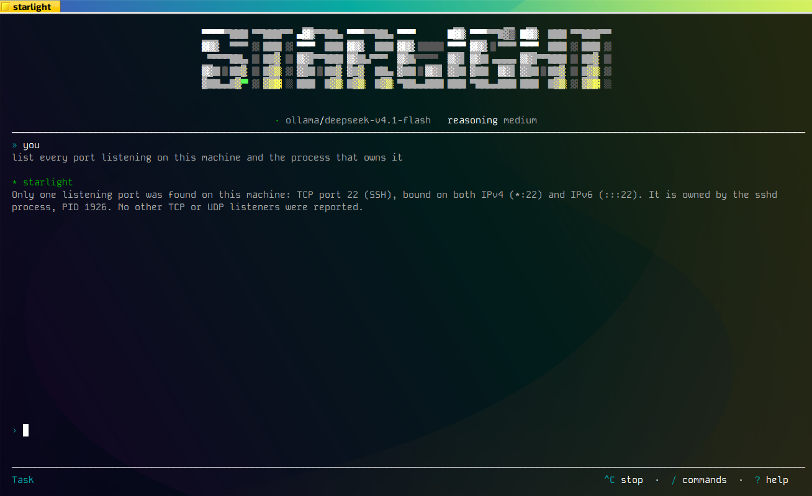
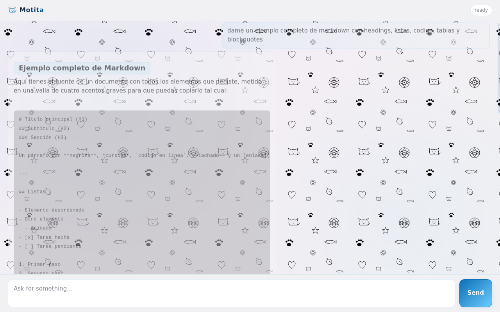

The AI agent that has to prove it finished.
Every other agent asks you to trust it. motita runs a real check, and only the check can declare the task done. If it fails, the agent gets the real error back and tries again. If it can't pass, it says so and stops.
curl -fsSL https://raw.githubusercontent.com/madkoding/motita/main/scripts/install.sh | sh
One static binary. No Docker, no runtime, no dependency tree. It runs on a 2008 netbook with 484 MB of RAM.


The architecture
The model proposes. Your code disposes.
motita splits every task in three, and the model only ever gets to
propose. The one rule that makes it work: the model can propose a
PASS, but only layer A can declare one. With no anchor configured,
the agent refuses to start — there is no "trust me" mode.
Deterministic code, not AI
Runs your command and checks the exit code, the output against a pattern, and your own invariants. It cannot be talked into a different answer.
Any provider, one client
A hand-written client for OpenAI-compatible, Anthropic and Gemini APIs. OpenAI, Ollama Cloud, Groq, OpenRouter, DeepSeek, or your own box — nothing else knows which.
Honest about its limits
Runs the action in an ephemeral directory under real limits — and tells you what it could not apply, instead of pretending the isolation is stronger than it is.
Why it holds up
Retries that learn something.
When a check fails, the agent gets the failing command, its real output and the structured verdict back. It fixes the actual problem instead of re-rolling the dice.
# The end-to-end test asserts the result on the FILESYSTEM, not in what the agent says.
# Its simulated model gets it wrong on purpose, then corrects itself — every commit.
attempt 1 FAIL anchor: exit 1 — "expected output.txt to exist"
the real error goes back to the model
attempt 2 PASS anchor: exit 0 — output.txt present and matching
# Your exit code means something:
0 every task passed its check
1 a task failed — with the reason in the message itself
2 bad configurationThe guardrails
Two layers, and only one of them is yours.
The floor is a small, deliberately un-configurable set of commands that are refused no matter what. The confirmation layer is where you decide what interrupts you — and the subtle middle row below is the whole design.
make, go build, npm test, python3 build.py and your own ./scripts/* run silently.
mkfs, the partition editors, dd with an output, the power verbs, and rm/mv/cp/ln aimed at /, ~, a system path, or the tree that contains your workspace.
Rule 2 is the one that keeps the layer alive: a policy that asked about
make would be switched off within a week, and then it would protect
nothing. There is no YAML key, no environment variable and no flag that relaxes
the floor — that's the point. A guardrail an operator can switch off is a
guardrail that will be switched off, during the incident it was meant for.
The numbers
Tested the way you'd test something you were about to bet on.
These are measured, not asserted — and the documentation's claims are anchored to the code by tests, so the page cannot drift away from the behaviour.
./internal/... ./cmd/...), checked one by one so a gap can't hide behind an average; the CI harnesses in tools/ are counted separatelygo.mod has no require line, and there is no go.sum386 as a first-class target — each one runs its container on Linux, and gets a header and size check on Windows and macOSscp and walk away
That coverage number isn't a badge. It's the mechanism that found the bugs now
documented in the reference: the RLIMIT_CPU that never fired, the process
group that kept a 1-second deadline waiting for five, the sandbox directory that got
deleted before the validator could look inside it. Every one of them is a test now.
CI reads the ELF header to prove the i386 binary really is 32-bit, and runs the
end-to-end tests inside a real 32-bit container before publishing anything. It also runs
staticcheck and govulncheck — the standard library ships inside the
binary, so a toolchain that has aged out of support hands its known vulnerabilities to whoever
downloads it.
That is not left to discipline. The build fails the day go.mod's Go version is no
longer one the Go project still patches — asked directly of
go.dev/dl?mode=json rather than kept as a note with a date somebody has to remember.
Every claim on this page is checked the same way: the "no dependencies" line, and these
documents matching their sources.
Where it runs
Pure Go, standard library only.
Nine targets, one static binary each. No cgo, nothing to vendor, nothing to patch.
386 · amd64 · arm (ARMv7) · arm64
386 · amd64 · arm64
amd64 · arm64
The interface
A terminal interface you'll actually want to use.
Run it with no arguments and you get a full TUI — written against the standard library alone, so it's the same binary, not a wrapper around something else.
Switch between doing work and read-only exploration.
Your provider, your key status, and the models it really publishes.
Tell the agent how a turn went. It lands on the procedures that turn used.
See what it has learned from those verdicts — no fine-tuning, no extra bill.
Plan mode is structurally read-only. It calls tools through a path that never invokes a shell, so pipes, redirections and metacharacters aren't blocked — they're syntactically unreachable.